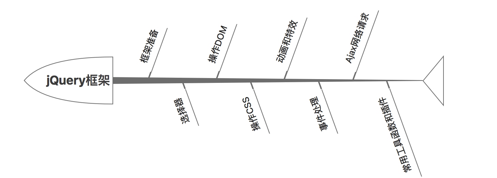

jQuery系列 [01]-jQuery框架简单介绍
1.1 jQuery简介
jQuery是一款优秀的javaScript库（框架），该框架凭借简洁的语法和跨平台的兼容性，极大的简化了开发人员对HTML文档，DOM，事件以及Ajax的操作。
主旨口号：写的更少, 干的更多(以更少的代码,实现更多的功能)
1.2 作者和版本介绍
jQuery最早由约翰·雷西格（John Resig）于2006年1月的BarCamp NYC上发布第一个版本。目前由Dave Methvin领导的开发团队进行开发，是目前最受欢迎的JavaScript库。

作者：John Resig(约翰·雷西格)
John Resig(约翰·雷西格)，1984年5月8日出生于美国纽约。
个人著作：精通Javascript以及JavaScript忍者的秘密
工作经验：先后于Mozilla、可汗学院担任开发工程师。
jQuery框架版本相关介绍
开源许可协议： MIT许可证
官方网站： http://jquery.com/
托管仓库： https://github.com/jquery/jquery
版本情况：
JQuery目前分成1.x版、2.x版和3.x版本，从2.0.0开始不再支持IE 6/7/8，2.0.0版本之前通过jQuery Migrate plugin与先前版本保持兼容。
最新版本：3.2.1
1.3 jQuery的优点（特点）
- 轻量级
- 免费开源
- 完善的文档
- 丰富的插件支持
- 完善的Ajax功能
- 不会污染顶级变量
- 强大的选择器功能
- 出色的DOM操作封装
- 出色的浏览器兼容性
- 可靠的事件处理机制
- 隐式迭代和链式编程操作
1.4 jQuery的基本功能
- 访问和操作DOM元素
1
2
3
4说明：使用jQuery库,可以很方便地获取和修改页面中的某元素无论是删除、移动、复制元素,jQuery都
提供了一整套方便、快捷的方法,既减少了代码的编写,又大大提高了用户对页面的体验度。
方法示例：append() prepend() remove() empty() html() text()等
控制页面的CSS样式
1
2
3说明：使用jQuery框架,可以帮助我们方便快捷的来操作CSS样式，且jQuery已经完成了浏览器兼容性处理。
方法示例：css() addClass() toggleClass() hasClass() removeClass()等完善的Ajax网络请求
1
2
3
4
5说明：Ajax是在原生页面中异步发送和读取服务器数据所采用的组合技术。
使用Ajax可以极大提高用户体验和程序性能，jQuery框架中提供了专门处理网络请求的Ajax组件，
我们可以方便的使用jQuery中提供的方法来实现Ajax网络请求。
方法示例：ajax() get() post()等页面标签事件处理
1
2
3说明：jQuery框架中对标签的处理，让表现层与功能开发分离，让我们只需要更多的关注业务逻辑方面的实现。
方法示例：on() off() click() mouseenter() hover() 等整套的动画特效实现
1
2
3说明：jQuery框架中提供了一整套的动画方法，可以满足开发中常见的动画效果实现，而且使用简单方便。
方法示例：show() hide() slideDown() slideUp() Animate() 等好用的工具方法和强大的插件支持
1
2
3
4
5说明：jQuery框架中提供了插件机制，利用插件机制程序员可以方便的对原有的框架和功能进行扩展。
另外框架本身也提供了表单、UI等大量的插件,这些插件的使用,极大丰富了页的展示效果。除了插件之外，
jQuery框架还为我们提供了很多好用的工具方法，这些工具方法可以帮助我们解决开发中一些常见需求。
方法示例：extend() each() map()等
1.5 第一个jQuery程序
① jQuery框架的使用步骤
- 下载jQuery框架在本地的电脑上（官网提供框架的下载链接，两个版本可供选择）
- 创建项目，在项目中使用script引入jQuery框架
- 使用jQuery框架来实现相关的功能
② jQuery框架示例程序
1 | <!DOCTYPE html> |
1.6 jQuery框架的代码风格
① 美元符号起始
在jQuery框架中，不管是页面元素的选择、内置的功能函数，都使用美元符号来起始的，而这个美元符号其实就是jQuery框架当中最重要且独有的对象: jQuery对象。
② 链式编程操作
jQuery框架中为我们提供了链式编程操作，链式编程的特点中，几乎每个jQuery方法执行完毕后都会把当前正在操作的对象作为返回值返回，如果我们需要对某个标签执行多个操作，那么使用链式编程可以让代码更短更简洁。
ex：$("#demoID").addClass("cur").siblings().removeClass("cur")
附: jQuery框架知识体系
